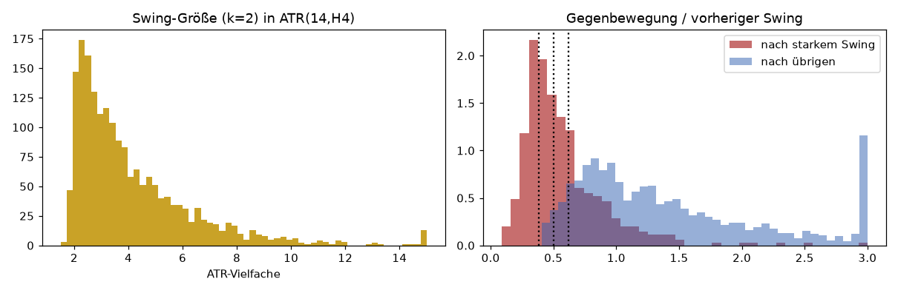
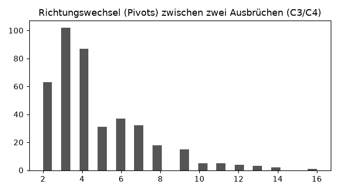
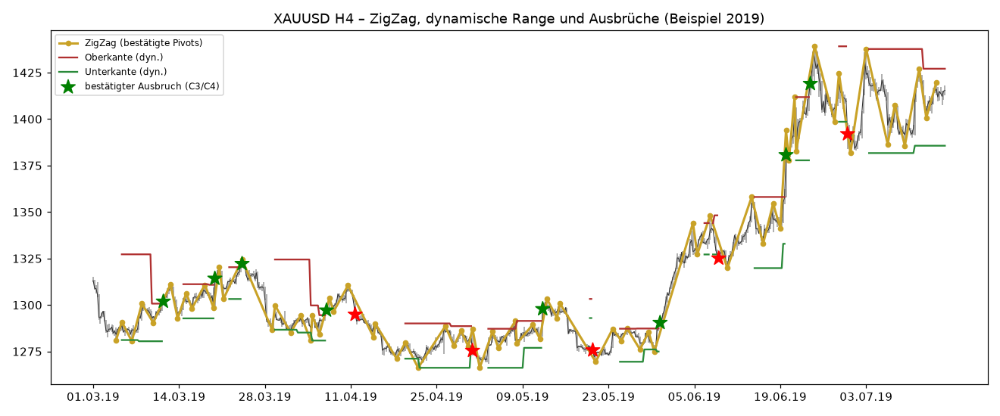
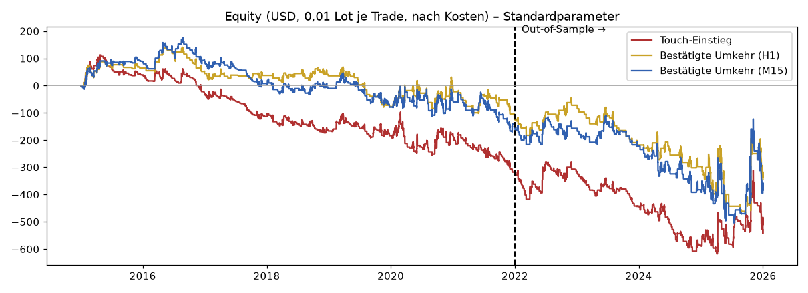
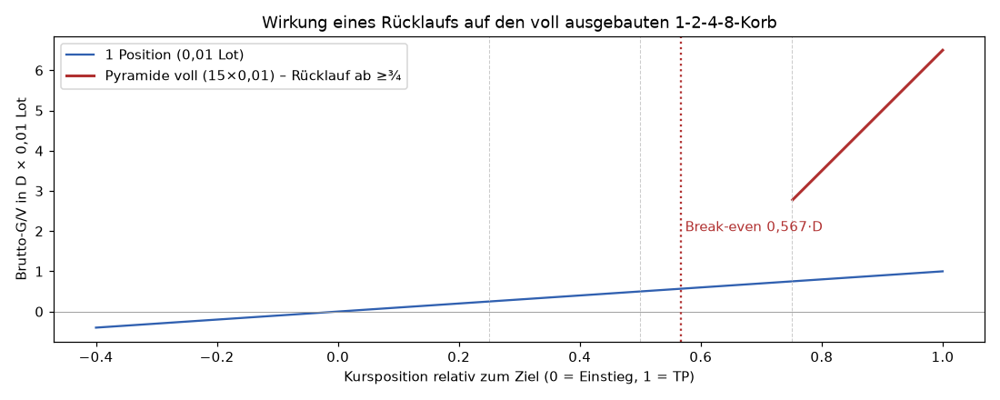
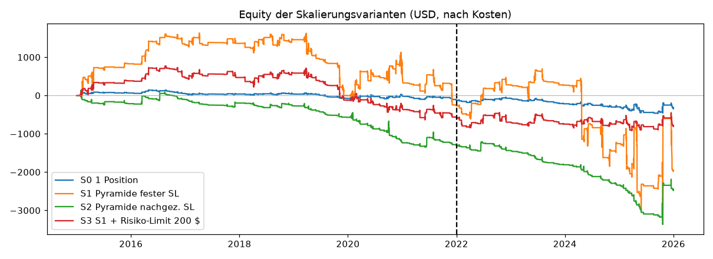
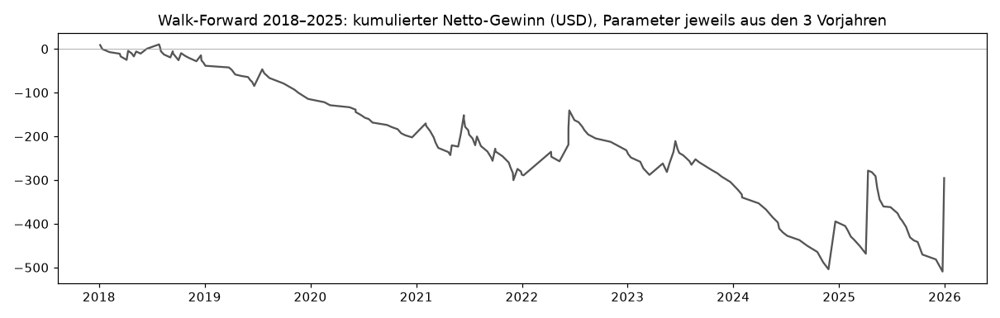

Forschungsbericht · Stand 19.10.2026 · Daten: XAUUSD M15/H1/H4 (Bid+Ask), 01.01.2015–31.12.2025 (UTC).
Was die Daten bestätigen: Gold bildet auf H4 tatsächlich ständig Zickzack-Bewegungen (≈173 Swings/Jahr bei k=2·ATR), starke Bewegungen werden meist teilweise korrigiert, und zwischen zwei bestätigten Ausbrüchen liegen typischerweise ~4 Richtungswechsel. Aber: Genau dieselben Werte erzeugt auch ein Zufallsmodell ohne jede Struktur (permutierte Kerzen). Das Muster ist also real sichtbar, aber nicht vorhersagbar genug, um Spread, Kommission und Swap zu bezahlen. An den Range-Grenzen dreht der Kurs nicht häufiger als zufällig – eher etwas seltener (leichter Ausbruchs-Impuls).
JawadStrategie.mq5 herunterladen Rohdaten Analyse (JSON) · Rohdaten Backtest (JSON)
dukascopy-node) war von unserem Server aus nicht erreichbar (Timeout/HTTP 202). Das Jahr 2026 ist bei EV Trading Labs nur mit Konto verfügbar und fehlt deshalb.Ein Hoch gilt erst als bestätigt, wenn der Kurs danach um k×ATR(14) gefallen ist (analog Tief). k=2: 1900 Swings in 11 Jahren (≈173/Jahr), Median 27,96 $ bzw. 3,42 ATR, Median-Dauer 7 H4-Kerzen; die Bestätigung kommt im Median 3 Kerzen nach dem Extrem. k=3: 868 Swings, Median 41,46 $ (5,02 ATR). Zufallsmodell (permutierte Kerzen): 180 Swings/Jahr, Median 3,48 ATR – also praktisch identisch.
| Regime (k=2) | Swings | aufwärts | abwärts | Ø Größe auf (ATR, Median) | Ø Größe ab | Dauer auf (Kerzen) | Dauer ab |
|---|---|---|---|---|---|---|---|
| Aufwärtstrend | 681 | 262 | 419 | 3,71 | 3,49 | 7 | 7 |
| Abwärtstrend | 475 | 304 | 171 | 3,44 | 3,34 | 7 | 7 |
| Seitwärts | 744 | 384 | 360 | 3,41 | 3,26 | 7 | 6 |
Im Aufwärtstrend gibt es mehr Abwärts-Swings (Korrekturen) als Aufwärts-Swings, aber die Aufwärts-Swings sind größer – so entsteht der Trend. Spiegelbildlich im Abwärtstrend.

| Swing-Typ (k=2) | n | Gegenbewegung ≥38,2 % | ≥50 % | ≥61,8 % | ≥100 % | Zufallsmodell ≥50 % | Zufallsmodell ≥100 % |
|---|---|---|---|---|---|---|---|
| stark (oberstes Quartil) | 475 | 69,9 % | 48,0 % | 30,7 % | 8,8 % | 51,8 % | 11,6 % |
| übrige | 1424 | 100,0 % | 97,8 % | 92,1 % | 61,6 % | 97,6 % | 62,5 % |
Hinweis: Weil ein Swing per Definition mindestens k×ATR lang ist, sind kleine Swings fast immer „voll korrigiert“ – das ist ein Konstruktionseffekt. Entscheidend ist der Vergleich mit dem Zufallsmodell: Die echten Korrekturquoten liegen nicht über den Zufallswerten (starke Swings: 48 % vs. 52 % für ≥50 %-Korrektur).
Anteil der Pivots, die innerhalb ±1 ATR am vorigen gleichartigen Pivot liegen (Range-Zickzack): 35,1 %; Zufallsmodell 36,9 % ± 1,0 %. Typische Länge einer Wiederholungsserie: Median 1, 90 %-Quantil 3 Wiederholungen.
Bestätigte Ausbrüche (Kriterium C3/C4): 406 (≈37/Jahr). Richtungswechsel (bestätigte Pivots) zwischen zwei Ausbrüchen: Median 4 (Quartile 3–6), Median-Abstand 37 H4-Kerzen (~6 Handelstage). Zufallsmodell: ebenfalls Median 4.

Anteil der Swing-Extreme je H4-Kerze: 00–04 UTC: 12,5 % · 04–08 UTC: 10,8 % · 08–12 UTC: 14,6 % · 12–16 UTC: 38,7 % · 16–20 UTC: 15,4 % · 20–24 UTC: 7,8 %. Die Kerze 12–16 UTC (US-Eröffnung, US-Daten) trägt ~39 % aller Wendepunkte – weil dort die Volatilität am größten ist.
Für jede erste Berührung einer gültigen Range-Grenze: Wird zuerst die Range-Mitte erreicht (Umkehr) oder zuerst Linie ± 1 ATR (Ausbruch)? Bei einer driftfreien Zufallsbewegung ist die Trefferquote = SL-Abstand/(SL+TP-Abstand). Ein echter Vorteil müsste deutlich darüber liegen.
| Teilmenge | n | Treffer (Mitte zuerst) | Erwartet bei Zufall | z | p | Ø R brutto |
|---|---|---|---|---|---|---|
| Alle | 571 | 27,8 % | 31,1 % | -1,68 | 0,092 | -0,102 |
| IS | 363 | 28,7 % | 30,6 % | -0,82 | 0,410 | -0,044 |
| OOS | 208 | 26,4 % | 31,9 % | -1,69 | 0,090 | -0,203 |
| Regime: Aufwärtstrend | 197 | 26,9 % | 30,8 % | -1,20 | 0,231 | -0,142 |
| Regime: Abwärtstrend | 141 | 28,4 % | 31,2 % | -0,73 | 0,465 | -0,082 |
| Regime: Seitwärts | 233 | 28,3 % | 31,2 % | -0,97 | 0,333 | -0,081 |
| Mit Trend | 108 | 34,3 % | 31,8 % | 0,55 | 0,581 | 0,098 |
| Gegen Trend | 230 | 24,3 % | 30,6 % | -2,07 | 0,038 | -0,218 |
| Vola niedrig | 190 | 23,2 % | 30,7 % | -2,26 | 0,024 | -0,270 |
| Vola mittel | 189 | 32,3 % | 30,9 % | 0,41 | 0,680 | 0,083 |
| Vola hoch | 189 | 27,5 % | 31,8 % | -1,27 | 0,203 | -0,161 |
| Uhrzeit 00-04 UTC | 61 | 29,5 % | 31,7 % | -0,37 | 0,709 | -0,063 |
| Uhrzeit 04-08 UTC | 60 | 25,0 % | 31,1 % | -1,02 | 0,308 | -0,115 |
| Uhrzeit 08-12 UTC | 88 | 26,1 % | 31,5 % | -1,09 | 0,278 | -0,149 |
| Uhrzeit 12-16 UTC | 253 | 28,9 % | 30,7 % | -0,65 | 0,519 | -0,093 |
| Uhrzeit 16-20 UTC | 76 | 30,3 % | 30,9 % | -0,13 | 0,897 | -0,045 |
| Uhrzeit 20-24 UTC | 33 | 21,2 % | 32,1 % | -1,35 | 0,176 | -0,229 |
| Short (Oberkante) | 298 | 23,8 % | 31,1 % | -2,74 | 0,006 | -0,233 |
| Long (Unterkante) | 273 | 32,2 % | 31,1 % | 0,42 | 0,671 | 0,041 |
Ergebnis: In keiner Teilmenge (Regime, Volatilität, Tageszeit, Richtung) zeigt sich ein signifikant positiver Vorteil. Insgesamt liegt die Umkehrquote unter der Zufallserwartung (z=-1,68). Gegen den Trend an der Linie zu handeln ist sogar signifikant schlechter (p≈0,038). Einzelne Teilmengen mit positivem z (z. B. „mit Trend“, z=0,55) sind nicht signifikant und bei so vielen Tests als Zufall zu erwarten (Mehrfachtest-Problem). Mit k=3 ist der Befund noch negativer (z=-2,86).

Reicht H4? Für die Struktur (Range/Ausbruch) ja. Für Einstieg und Ausführung nicht: Ohne niedrigeren Zeitrahmen ist die Reihenfolge von SL/TP innerhalb einer H4-Kerze unbekannt. Getestet wurden Touch (reine H4-Linie, Fill auf M15), Bestätigung auf H1 und auf M15. Die Bestätigung reduziert die Zahl der Trades und Verlustserien, erzeugt aber keinen Vorteil (siehe F).
| Regel | Short an der Oberkante | Long an der Unterkante |
|---|---|---|
| Voraussetzung | gültige Range, letzter H4-Schluss innerhalb, kein bestätigter Ausbruch, Richtung in dieser Range noch nicht gehandelt (keine „Rache“-Trades) | |
| Touch-Einstieg | Verkauf, sobald Bid U erreicht (vorige M15 schloss darunter) | Kauf, sobald Bid L erreicht |
| Bestätigter Einstieg | Setup scharf, wenn Hoch ≥ U − 0,25·ATR; dann H1-Kerze (bzw. M15) bärisch, Schluss < Tief der Vorkerze und < U ⇒ Verkauf zur nächsten Eröffnung. Verfall nach 24 h. | spiegelbildlich: Tief ≤ L + 0,25·ATR, bullische Kerze schließt über Vorkerzenhoch und > L |
| Stop-Loss | max(U, höchster Kurs seit Setup) + 1,0·ATR (Touch: U + 1,0·ATR) | min(L, tiefster Kurs) − 1,0·ATR |
| Take-Profit | L + 0,1·ATR | U − 0,1·ATR |
| Filter | Chance/Risiko ≥ 1; Spread-, Margin- und Risiko-Limits (EA) | |
| Vorzeitiger Ausstieg | Bestätigter Ausbruch gegen die Position ⇒ Schließen zur nächsten Eröffnung. Danach keine Gegentrend-Einstiege bis neue Range. | |
| Kennzahl | Touch | Bestätigt H1 | Bestätigt M15 |
|---|---|---|---|
| Trades | 482 | 213 | 322 |
| Trefferquote | 14,1 % | 26,8 % | 24,8 % |
| Ø Gewinn ($) | 35,02 | 34,25 | 32,91 |
| Ø Verlust ($) | -7,03 | -14,64 | -12,51 |
| Erwartung je Trade nach Kosten ($) | -1,10 | -1,56 | -1,23 |
| 95 %-Bootstrap-KI Erwartung | [-2,68 ; 0,79] | [-5,48 ; 2,31] | [-4,03 ; 1,80] |
| t-Test p-Wert (H0: Erwartung=0) | 0,210 | 0,452 | 0,415 |
| Profitfaktor | 0,82 | 0,85 | 0,87 |
| Netto gesamt ($) | -527,81 | -331,30 | -394,97 |
| Brutto vor Komm./Swap ($) | -389,02 | -201,58 | -230,35 |
| Kommission ($) | 33,74 | 14,91 | 22,54 |
| Swap ($) | 105,05 | 114,81 | 142,09 |
| Max. Drawdown ($, inkl. offener Pos.) | 741,91 | 620,47 | 680,74 |
| Max. DD in % von 10.000 $ | 7,4 | 6,2 | 6,8 |
| Längste Verlustserie | 25 | 13 | 15 |
| Spitzen-Margin 1:100 ($) | 45,46 | 45,46 | 45,46 |
| Spitzen-Margin 1:500 ($) | 9,09 | 9,09 | 9,09 |
| Max. Positionen (×0,01) | 1 | 1 | 1 |

Touch hat viele kleine Verluste (Trefferquote ~14 %), Bestätigung höhere Trefferquoten (~25–27 %) aber größere Verluste – alle drei sind negativ.
D = Abstand Einstieg → TP. Nachkäufe nur, wenn der Kurs in Gewinnrichtung ¼, ½ und ¾ von D erreicht – nie bei Gegenbewegung. Alle Positionen teilen TP und SL. Gesamt: 15 Positionen = 0,15 Lot.
| Stufe | Positionen gesamt | Volumen (Lot) | Ø Einstieg (Anteil von D) | Brutto bei TP (D×0,01 Lot) | Break-even-Kurs (Anteil von D) | G/V bei Rücklauf auf festen SL (SL=0,4·D hinter Einstieg) | G/V bei Rücklauf auf nachgezogenen SL | Kosten Spread 0,30+Komm.+Slip ($) |
|---|---|---|---|---|---|---|---|---|
| 1 (Einstieg) | 1 | 0,01 | 0,000 | 1,00 | 0,000 | -0,40 | -0,40 | 0,42 |
| 2 (¼ Ziel) | 3 | 0,03 | 0,167 | 2,50 | 0,167 | -1,70 | -0,50 | 1,26 |
| 3 (½ Ziel) | 7 | 0,07 | 0,357 | 4,50 | 0,357 | -5,30 | -0,75 | 2,94 |
| 4 (¾ Ziel) | 15 | 0,15 | 0,567 | 6,50 | 0,567 | -14,50 | -1,00 | 6,30 |
Mathematik: Ø-Einstieg = (1·0 + 2·¼ + 4·½ + 8·¾)/15 = 8,5/15 = 0,567·D. Bei TP: Brutto 6,5·D (×0,01 Lot) gegenüber 1·D ohne Skalierung. Bei Rücklauf nach dem letzten Nachkauf ist der Korb schon bei 0,567·D wieder bei null – nur 0,183·D unter dem letzten Einstieg. Mit nachgezogenem SL (½-Linie) endet ein solcher Rücklauf bei −1,0·D, also schlechter als ein Verlust-Trade ohne Skalierung. Frühe Gewinne decken spätere Verluste nur dann, wenn das Ziel tatsächlich erreicht wird; genau das ist an den Range-Grenzen nicht häufiger als zufällig.

Margin für 0,15 Lot: bei Gold 2.000 $ → 300 $ (1:100) bzw. 60 $ (1:500); bei 4.000 $ → 600 $ bzw. 120 $. Gemessene Spitze im Backtest: 655,16 $ (1:100) / 131,03 $ (1:500). Die Margin ist nicht der Engpass – das Verlustrisiko ist es.
| Kennzahl | S0 | S0b | S1 | S2 | S3 | S2-touch |
|---|---|---|---|---|---|---|
| Trades | 213 | 261 | 213 | 261 | 213 | 554 |
| Trefferquote | 26,8 % | 27,6 % | 25,8 % | 3,4 % | 25,8 % | 2,7 % |
| Ø Gewinn ($) | 34,25 | 13,84 | 226,83 | 259,18 | 95,99 | 235,13 |
| Ø Verlust ($) | -14,64 | -8,93 | -91,40 | -19,04 | -38,44 | -12,40 |
| Erwartung je Trade nach Kosten ($) | -1,56 | -2,65 | -9,23 | -9,44 | -3,73 | -5,70 |
| 95 %-Bootstrap-KI Erwartung | [-5,48 ; 2,31] | [-4,63 ; -0,38] | [-46,76 ; 27,10] | [-16,53 ; 1,61] | [-13,54 ; 5,98] | [-10,14 ; 0,78] |
| t-Test p-Wert (H0: Erwartung=0) | 0,452 | 0,017 | 0,622 | 0,046 | 0,454 | 0,033 |
| Profitfaktor | 0,85 | 0,59 | 0,86 | 0,49 | 0,87 | 0,53 |
| Netto gesamt ($) | -331,30 | -691,18 | -1.966,25 | -2.464,91 | -794,03 | -3.155,60 |
| Brutto vor Komm./Swap ($) | -201,58 | -620,58 | -1.046,11 | -2.260,86 | -381,26 | -2.819,14 |
| Kommission ($) | 14,91 | 18,27 | 92,89 | 73,01 | 43,75 | 111,58 |
| Swap ($) | 114,81 | 52,33 | 827,25 | 131,04 | 369,03 | 224,87 |
| Max. Drawdown ($, inkl. offener Pos.) | 620,47 | 917,93 | 4.624,97 | 3.515,70 | 1.689,96 | 4.249,44 |
| Max. DD in % von 10.000 $ | 6,2 | 9,2 | 46,2 | 35,2 | 16,9 | 42,5 |
| Längste Verlustserie | 13 | 17 | 17 | 83 | 17 | 94 |
| Spitzen-Margin 1:100 ($) | 45,46 | 45,46 | 655,16 | 644,33 | 197,46 | 634,24 |
| Spitzen-Margin 1:500 ($) | 9,09 | 9,09 | 131,03 | 128,87 | 39,49 | 126,85 |
| Max. Positionen (×0,01) | 1 | 1 | 15 | 15 | 15 | 15 |
| Kennzahl | S0 | S0b | S1 | S2 | S3 | S2-touch |
|---|---|---|---|---|---|---|
| Trades | 76 | 96 | 76 | 96 | 76 | 205 |
| Trefferquote | 26,3 % | 27,1 % | 26,3 % | 2,1 % | 26,3 % | 2,0 % |
| Ø Gewinn ($) | 50,03 | 20,25 | 320,43 | 647,54 | 106,45 | 437,24 |
| Ø Verlust ($) | -21,55 | -14,01 | -144,76 | -26,13 | -41,77 | -16,48 |
| Erwartung je Trade nach Kosten ($) | -2,71 | -4,73 | -22,34 | -12,10 | -2,76 | -7,63 |
| Profitfaktor | 0,83 | 0,54 | 0,79 | 0,53 | 0,91 | 0,53 |
| Netto gesamt ($) | -206,24 | -454,29 | -1.697,69 | -1.161,53 | -210,04 | -1.563,42 |
| Max. Drawdown ($, inkl. offener Pos.) | 424,96 | 642,03 | 3.664,27 | 2.162,93 | 472,18 | 2.515,46 |
| Längste Verlustserie | 13 | 12 | 13 | 83 | 13 | 94 |
| Spitzen-Margin 1:100 ($) | 45,46 | 45,46 | 655,16 | 644,33 | 197,46 | 634,24 |
| Spitzen-Margin 1:500 ($) | 9,09 | 9,09 | 131,03 | 128,87 | 39,49 | 126,85 |

Bewertung: Die Skalierung erhöht das Risiko deutlich (Drawdown ×5–8) und verbessert die Erwartung nicht; mit nachgezogenem SL sinkt die Trefferquote auf ~3 %, weil fast jeder Rücklauf den Korb mit Verlust schließt. Empfohlene Grenzen, falls überhaupt getestet: max. 15 Positionen, max. Korbrisiko 2 % der Equity bzw. 200 $, Tagesverlust-Limit 3 %, EA-Stopp bei 20 % Drawdown (alles im EA umgesetzt).
Ein einzelner Docht/Touch gilt nie als bestätigt. Bewertet: Erreicht der Kurs nach der Bestätigung +2 ATR in Ausbruchsrichtung, bevor er 0,5 ATR zurück in die Range läuft? Vergleich mit Zufallserwartung.
| Kriterium | Zeitraum | n | Follow-through (+2 ATR vor Rückkehr) | Zufallserwartung | z | Ø Verzögerung (H4-Kerzen) | Ø Abstand zur Linie bei Bestätigung (ATR) | nach 30 Kerzen noch jenseits der Linie |
|---|---|---|---|---|---|---|---|---|
| W: Nur Docht außerhalb | IS | 318 | 28,6 % | 27,4 % | 0,50 | 0,06 | 0,75 | 49,1 % |
| W: Nur Docht außerhalb | OOS | 185 | 30,8 % | 26,6 % | 1,37 | 0,06 | 0,65 | 53,0 % |
| C1: H4-Schluss außerhalb | IS | 268 | 36,9 % | 35,4 % | 0,56 | 0,27 | 0,75 | 54,9 % |
| C1: H4-Schluss außerhalb | OOS | 165 | 45,5 % | 34,7 % | 2,98 | 0,25 | 0,66 | 59,4 % |
| C2: H4-Schluss ≥0,5 ATR außerhalb | IS | 229 | 46,7 % | 44,3 % | 0,75 | 0,59 | 1,23 | 57,6 % |
| C2: H4-Schluss ≥0,5 ATR außerhalb | OOS | 147 | 51,7 % | 43,1 % | 2,13 | 0,56 | 1,11 | 63,3 % |
| C3: Schluss außerhalb + True Range ≥1,5 ATR | IS | 223 | 47,5 % | 42,4 % | 1,60 | 0,35 | 1,21 | 61,4 % |
| C3: Schluss außerhalb + True Range ≥1,5 ATR | OOS | 147 | 53,7 % | 42,0 % | 2,99 | 0,33 | 1,15 | 63,9 % |
| C4: 2 H4-Schlüsse außerhalb (Follow-through) | IS | 222 | 43,7 % | 39,6 % | 1,29 | 1,00 | 0,97 | 56,3 % |
| C4: 2 H4-Schlüsse außerhalb (Follow-through) | OOS | 137 | 53,3 % | 40,9 % | 3,04 | 1,00 | 1,04 | 63,5 % |
| C34: C3 oder C4 (Strategie-Standard) | IS | 246 | 41,9 % | 38,9 % | 0,99 | 0,43 | 0,94 | 57,3 % |
| C34: C3 oder C4 (Strategie-Standard) | OOS | 160 | 49,4 % | 37,9 % | 3,07 | 0,40 | 0,84 | 61,9 % |
Ergebnis: Reine Dochte (W) sind kaum besser als Zufall – ein Docht ist kein Ausbruch. Schlusskurs-basierte Kriterien mit Filter (C3: ATR-Expansion, C4: zwei Schlüsse) haben die beste Follow-through-Quote über Zufall (gesamt z≈3), kosten aber Verzögerung (C4: 1 Kerze, ~1 ATR Abstand). Die Strategie nutzt C3 ODER C4 (im IS vorab gewählt). „Trendwechsel vs. Korrektur“: nach 30 H4-Kerzen liegt der Kurs in ~57–64 % der bestätigten Ausbrüche noch jenseits der Linie; bei Ausbrüchen gegen den bisherigen Trend ähnlich (~63 %) – die Daten erlauben keine zuverlässige Unterscheidung im Moment des Ausbruchs.
| Kennzahl | C1 | C2 | C3 | C4 | C34 |
|---|---|---|---|---|---|
| Trades | 125 | 160 | 154 | 150 | 137 |
| Trefferquote | 24,8 % | 28,7 % | 29,9 % | 31,3 % | 27,0 % |
| Erwartung je Trade nach Kosten ($) | -1,49 | -1,96 | -0,85 | -0,16 | -0,91 |
| Profitfaktor | 0,80 | 0,77 | 0,90 | 0,98 | 0,88 |
| Netto gesamt ($) | -186,37 | -314,00 | -130,80 | -24,09 | -125,06 |
| Kennzahl | C1 | C2 | C3 | C4 | C34 |
|---|---|---|---|---|---|
| Trades | 75 | 83 | 88 | 86 | 76 |
| Trefferquote | 18,7 % | 21,7 % | 26,1 % | 23,3 % | 26,3 % |
| Erwartung je Trade nach Kosten ($) | -4,84 | -7,15 | -3,57 | -6,40 | -2,71 |
| Profitfaktor | 0,69 | 0,60 | 0,78 | 0,63 | 0,83 |
| Netto gesamt ($) | -363,03 | -593,17 | -313,82 | -550,79 | -206,24 |
| Kennzahl | IS 2015–2021 | OOS 2022–2025 | Gesamt |
|---|---|---|---|
| Trades | 137 | 76 | 213 |
| Trefferquote | 27,0 % | 26,3 % | 26,8 % |
| Ø Gewinn ($) | 25,73 | 50,03 | 34,25 |
| Ø Verlust ($) | -10,77 | -21,55 | -14,64 |
| Erwartung je Trade nach Kosten ($) | -0,91 | -2,71 | -1,56 |
| 95 %-Bootstrap-KI Erwartung | [-4,05 ; 2,37] | [-11,31 ; 7,48] | [-5,48 ; 2,31] |
| t-Test p-Wert (H0: Erwartung=0) | 0,580 | 0,588 | 0,452 |
| Profitfaktor | 0,88 | 0,83 | 0,85 |
| Netto gesamt ($) | -125,06 | -206,24 | -331,30 |
| Brutto vor Komm./Swap ($) | -54,46 | -147,12 | -201,58 |
| Kommission ($) | 9,59 | 5,32 | 14,91 |
| Swap ($) | 61,01 | 53,80 | 114,81 |
| Max. Drawdown ($, inkl. offener Pos.) | 273,38 | 424,96 | 620,47 |
| Max. DD in % von 10.000 $ | 2,7 | 4,2 | 6,2 |
| Längste Verlustserie | 12 | 13 | 13 |
| Spitzen-Margin 1:100 ($) | 45,46 | 45,46 | 45,46 |
| Spitzen-Margin 1:500 ($) | 9,09 | 9,09 | 9,09 |
| Max. Positionen (×0,01) | 1 | 1 | 1 |
| Zeitraum | Regime | Trades | Trefferquote | Erwartung ($) | PF | Netto ($) |
|---|---|---|---|---|---|---|
| IS 2015–2021 | Aufwärtstrend | 40 | 27,5 % | -0,75 | 0,91 | -30,11 |
| IS 2015–2021 | Abwärtstrend | 35 | 28,6 % | -0,45 | 0,94 | -15,63 |
| IS 2015–2021 | Seitwärts | 62 | 25,8 % | -1,28 | 0,83 | -79,32 |
| OOS 2022–2025 | Aufwärtstrend | 30 | 26,7 % | -3,24 | 0,84 | -97,18 |
| OOS 2022–2025 | Abwärtstrend | 13 | 23,1 % | -4,02 | 0,64 | -52,23 |
| OOS 2022–2025 | Seitwärts | 33 | 27,3 % | -1,72 | 0,88 | -56,83 |
| Gesamt | Aufwärtstrend | 70 | 27,1 % | -1,82 | 0,86 | -127,29 |
| Gesamt | Abwärtstrend | 48 | 27,1 % | -1,41 | 0,83 | -67,86 |
| Gesamt | Seitwärts | 95 | 26,3 % | -1,43 | 0,85 | -136,15 |
| Kennzahl | Spread 0,20 $ / Slippage 0,05 | Spread 0,30 $ / Slippage 0,05 (Basis) | Spread 0,35 $ / Slippage 0,10 | Echter Dukascopy-Spread (Ask-Daten) / Slip 0,05 | Ohne jegliche Kosten (nur Referenz) |
|---|---|---|---|---|---|
| Trades | 137 | 137 | 137 | 136 | 138 |
| Trefferquote | 27,0 % | 27,0 % | 26,3 % | 27,2 % | 28,3 % |
| Erwartung je Trade nach Kosten ($) | -0,81 | -0,91 | -1,09 | -0,79 | 0,36 |
| Profitfaktor | 0,90 | 0,88 | 0,86 | 0,90 | 1,05 |
| Netto gesamt ($) | -110,80 | -125,06 | -149,67 | -107,53 | 49,07 |
| Max. Drawdown ($, inkl. offener Pos.) | 260,52 | 273,38 | 295,63 | 256,15 | 166,52 |
| Kennzahl | Spread 0,20 $ / Slippage 0,05 | Spread 0,30 $ / Slippage 0,05 (Basis) | Spread 0,35 $ / Slippage 0,10 | Echter Dukascopy-Spread (Ask-Daten) / Slip 0,05 | Ohne jegliche Kosten (nur Referenz) |
|---|---|---|---|---|---|
| Trades | 76 | 76 | 76 | 75 | 77 |
| Trefferquote | 26,3 % | 26,3 % | 26,3 % | 26,7 % | 28,6 % |
| Erwartung je Trade nach Kosten ($) | -2,73 | -2,71 | -2,83 | -2,32 | -0,69 |
| Profitfaktor | 0,83 | 0,83 | 0,82 | 0,85 | 0,95 |
| Netto gesamt ($) | -207,41 | -206,24 | -215,29 | -174,30 | -53,42 |
| Max. Drawdown ($, inkl. offener Pos.) | 427,13 | 424,96 | 431,86 | 391,36 | 287,84 |
Bewusst kleines Gitter (k ∈ {2;3}, SL-Puffer ∈ {0,5;1,0} ATR, Mindestbreite ∈ {3;5} ATR, Einstieg ∈ {Touch; H1; M15}). Anteil mit PF>1: IS 0,0 %, OOS 4,2 %. Bester IS-Kandidat: k=2.0, SL=0.5, Breite=3.0, confH1 – IS PF 0,93, OOS PF 0,84.
| k | SL-Puffer (ATR) | Mindestbreite (ATR) | Einstieg | IS n | IS Erwartung | IS PF | OOS n | OOS Erwartung | OOS PF |
|---|---|---|---|---|---|---|---|---|---|
| 2.0 | 0.5 | 3.0 | touch | 335 | -1,34 | 0,57 | 197 | -0,79 | 0,86 |
| 2.0 | 0.5 | 3.0 | confH1 | 154 | -0,46 | 0,93 | 84 | -2,34 | 0,84 |
| 2.0 | 0.5 | 3.0 | confM15 | 221 | -0,43 | 0,93 | 127 | -1,39 | 0,88 |
| 2.0 | 0.5 | 5.0 | touch | 179 | -1,41 | 0,58 | 118 | -0,46 | 0,92 |
| 2.0 | 0.5 | 5.0 | confH1 | 78 | -3,78 | 0,57 | 55 | -12,02 | 0,38 |
| 2.0 | 0.5 | 5.0 | confM15 | 117 | -2,24 | 0,69 | 80 | -6,39 | 0,57 |
| 2.0 | 1.0 | 3.0 | touch | 300 | -1,10 | 0,76 | 182 | -1,09 | 0,87 |
| 2.0 | 1.0 | 3.0 | confH1 | 137 | -0,91 | 0,88 | 76 | -2,71 | 0,83 |
| 2.0 | 1.0 | 3.0 | confM15 | 203 | -0,79 | 0,89 | 119 | -1,98 | 0,85 |
| 2.0 | 1.0 | 5.0 | touch | 161 | -1,46 | 0,73 | 110 | 1,13 | 1,14 |
| 2.0 | 1.0 | 5.0 | confH1 | 72 | -5,02 | 0,53 | 55 | -14,10 | 0,39 |
| 2.0 | 1.0 | 5.0 | confM15 | 106 | -2,77 | 0,69 | 77 | -5,89 | 0,67 |
| 3.0 | 0.5 | 3.0 | touch | 185 | -0,99 | 0,68 | 107 | -1,00 | 0,82 |
| 3.0 | 0.5 | 3.0 | confH1 | 93 | -1,49 | 0,81 | 54 | -6,42 | 0,57 |
| 3.0 | 0.5 | 3.0 | confM15 | 121 | -1,16 | 0,82 | 68 | -3,19 | 0,74 |
| 3.0 | 0.5 | 5.0 | touch | 133 | -1,72 | 0,47 | 80 | -2,81 | 0,50 |
| 3.0 | 0.5 | 5.0 | confH1 | 64 | -3,20 | 0,66 | 43 | -7,94 | 0,49 |
| 3.0 | 0.5 | 5.0 | confM15 | 83 | -1,73 | 0,75 | 59 | -7,65 | 0,46 |
| 3.0 | 1.0 | 3.0 | touch | 174 | -2,21 | 0,56 | 104 | -3,28 | 0,63 |
| 3.0 | 1.0 | 3.0 | confH1 | 87 | -3,56 | 0,62 | 49 | -8,50 | 0,52 |
| 3.0 | 1.0 | 3.0 | confM15 | 117 | -2,41 | 0,69 | 64 | -5,40 | 0,62 |
| 3.0 | 1.0 | 5.0 | touch | 124 | -2,89 | 0,47 | 77 | -5,03 | 0,45 |
| 3.0 | 1.0 | 5.0 | confH1 | 61 | -4,97 | 0,56 | 40 | -8,64 | 0,53 |
| 3.0 | 1.0 | 5.0 | confM15 | 80 | -3,40 | 0,62 | 55 | -7,06 | 0,53 |
| Testjahr | gewählte Parameter (aus 3 Vorjahren) | PF Training | Trades Test | PF Test | Netto Test ($) |
|---|---|---|---|---|---|
| 2018 | k=2.0, SL=0.5, Breite=3.0, confH1 | 1,25 | 29 | 0,77 | -32,18 |
| 2019 | k=2.0, SL=0.5, Breite=5.0, confM15 | 1,08 | 16 | 0,32 | -82,28 |
| 2020 | k=3.0, SL=0.5, Breite=3.0, touch | 1,18 | 17 | 0,00 | -87,98 |
| 2021 | k=2.0, SL=0.5, Breite=3.0, confM15 | 1,02 | 34 | 0,70 | -85,28 |
| 2022 | k=3.0, SL=0.5, Breite=3.0, confM15 | 0,97 | 15 | 1,49 | 55,75 |
| 2023 | k=2.0, SL=0.5, Breite=3.0, confH1 | 1,08 | 21 | 0,60 | -72,49 |
| 2024 | k=3.0, SL=0.5, Breite=5.0, confM15 | 1,35 | 16 | 0,55 | -90,34 |
| 2025 | k=2.0, SL=1.0, Breite=5.0, touch | 1,04 | 25 | 1,33 | 99,31 |
| Kennzahl | Walk-Forward gesamt |
|---|---|
| Trades | 173 |
| Trefferquote | 16,2 % |
| Ø Gewinn ($) | 40,59 |
| Ø Verlust ($) | -9,88 |
| Erwartung je Trade nach Kosten ($) | -1,71 |
| 95 %-Bootstrap-KI Erwartung | [-5,40 ; 2,68] |
| t-Test p-Wert (H0: Erwartung=0) | 0,416 |
| Profitfaktor | 0,79 |
| Netto gesamt ($) | -295,49 |
| Max. Drawdown ($, inkl. offener Pos.) | 519,79 |
| Längste Verlustserie | 23 |

ACCOUNT_TRADE_MODE_REAL ⇒ Start verweigert, solange InpAllowLive=false). Skalierung ist standardmäßig AUS (InpUsePyramid=false) und kann für Tests eingeschaltet werden.Funktionen: H4-Analyse aus geschlossenen Kerzen, ZigZag mit Bestätigung, dynamische Range, Ausbruchskriterien C1–C4/C34, Touch- oder bestätigter Einstieg (H1/M15), SL/TP serverseitig, 1-2-4-8-Nachkäufe nur in Gewinnrichtung, fester oder stufenweise nachgezogener SL (nur in Gewinnrichtung), Ausstieg bei Gegen-Ausbruch, Limits (max. Positionen, Korbrisiko $/%, Tagesverlust, Max-Drawdown, Margin-Level via OrderCalcMargin, Spread), Broker-Eigenschaften (Digits, Point, Tick-Wert, Volumenschritt, StopsLevel, Kontraktgröße, Filling-Modus), Protokoll aller Entscheidungen in MQL5/Files/JawadStrategie_log.csv und im Journal.
JawadStrategie.mq5 herunterladen
//+------------------------------------------------------------------+
//| JawadStrategie.mq5 |
//| ZigZag-/Range-System für XAUUSD (H4-Range, H1/M15-Bestätigung) |
//| |
//| WICHTIG: Der Backtest 2015–2025 (Dukascopy-Daten) zeigte KEINE |
//| positive Erwartung nach Kosten. Dieser EA ist ein Forschungs- |
//| und Demo-Werkzeug. Standardmäßig verweigert er Echtgeld-Konten. |
//+------------------------------------------------------------------+
#property copyright "Jawad Strategie – Forschungsprototyp"
#property version "1.00"
#include <Trade\Trade.mqh>
enum ENUM_ENTRY_MODE { ENTRY_TOUCH = 0, ENTRY_CONFIRM_H1 = 1, ENTRY_CONFIRM_M15 = 2 };
enum ENUM_BO_CRIT { BO_C1 = 1, BO_C2 = 2, BO_C3 = 3, BO_C4 = 4, BO_C34 = 34 };
enum ENUM_STOP_MODE { STOP_FIXED = 0, STOP_STEP = 1 };
//--- Sicherheit
input bool InpAllowLive = false; // Echtgeld-Konto erlauben (Standard: NEIN)
input long InpMagic = 20261019;
//--- Signal-Parameter (wie im Python-Backtest)
input int InpH4Bars = 1500; // H4-Historie für die Zustandsberechnung
input int InpATRPeriod = 14;
input double InpZigK = 2.0; // ZigZag-Umkehr in ATR (Pivot erst bestätigt nach k*ATR Gegenbewegung)
input double InpMinWidthATR = 3.0; // Mindestbreite der Range in ATR
input double InpMaxWidthATR = 20.0; // Höchstbreite der Range in ATR
input ENUM_BO_CRIT InpBreakout = BO_C34; // Ausbruchskriterium
input ENUM_ENTRY_MODE InpEntryMode = ENTRY_CONFIRM_H1;
input double InpZoneATR = 0.25; // Zone vor der Linie, die einen Setup "scharf" schaltet
input double InpSLBufATR = 1.0; // SL-Abstand hinter Linie/Extrem in ATR
input double InpTPBufATR = 0.1; // TP: Gegenlinie minus Puffer in ATR
input double InpMinRR = 1.0; // Mindest-Chance/Risiko
input int InpExpiryHours = 24; // Setup verfällt nach Stunden
input bool InpBreakoutExit = true; // Bestätigter Ausbruch gegen die Position => schließen
input int InpERPeriod = 60; // Regime: Efficiency-Ratio-Periode (H4)
input double InpERThreshold = 0.10; // Regime-Schwelle
//--- Positionsgröße & Skalierung
input double InpBaseLot = 0.01;
input bool InpUsePyramid = false; // 1-2-4-8-Pyramide (Backtest: erhöht Risiko, KEIN Vorteil)
input ENUM_STOP_MODE InpStopMode = STOP_FIXED;
input int InpMaxPositions = 15;
//--- Risiko-Grenzen
input double InpMaxBasketRiskUSD = 200.0; // max. Verlust des gesamten Korbs bei SL (Kontowährung)
input double InpMaxBasketRiskPct = 2.0; // ... bzw. in % der Equity (strengere Grenze gilt)
input double InpDailyLossLimitPct = 3.0; // Tagesverlust-Limit => keine neuen Einstiege
input double InpMaxDrawdownPct = 20.0; // Equity-Drawdown vom Hoch => EA stoppt Einstiege
input double InpMinMarginLevelPct = 300.0; // Mindest-Margin-Level nach Order
input int InpMaxSpreadPoints = 60; // max. Spread in Punkten
input int InpSlippagePoints = 30;
input bool InpDrawObjects = true;
input bool InpLogToFile = true;
//--- Globale Zustände
CTrade trade;
double g_point, g_tickSize, g_tickValue, g_volMin, g_volMax, g_volStep, g_contract;
int g_digits, g_stopsLevel, g_freezeLevel;
datetime g_lastH4 = 0, g_lastConf = 0, g_dayStart = 0;
double g_dayStartEquity = 0, g_peakEquity = 0;
int g_logHandle = INVALID_HANDLE;
// Range-Zustand (nach der letzten geschlossenen H4-Kerze)
double st_U = 0, st_L = 0, st_ATR = 0;
bool st_valid = false, st_haveRange = false;
int st_bo = 0, st_regime = 0;
string st_rid = "";
// Blockierte Richtungen in der aktuellen Range (nach einem Trade)
string blk_rid = ""; bool blk_long = false, blk_short = false;
// Setup (Bestätigungsmodus)
int arm_dir = 0; string arm_rid = ""; double arm_ext = 0; datetime arm_time = 0;
// Korb
int bk_dir = 0, bk_adds = 0; double bk_E = 0, bk_D = 0, bk_TP = 0, bk_SL = 0;
const int UNITS[4] = {1, 2, 4, 8};
const double FRAC[4] = {0.0, 0.25, 0.5, 0.75};
//+------------------------------------------------------------------+
void Log(string ev, string msg)
{
string line = TimeToString(TimeCurrent(), TIME_DATE|TIME_SECONDS) + ";" + ev + ";" + msg;
Print("[Jawad] ", ev, " | ", msg);
if(InpLogToFile && g_logHandle != INVALID_HANDLE) { FileWrite(g_logHandle, TimeToString(TimeCurrent(), TIME_DATE|TIME_SECONDS), ev, msg); FileFlush(g_logHandle); }
}
string D2S(double v, int d = -1) { return DoubleToString(v, d < 0 ? g_digits : d); }
double NP(double p) { if(g_tickSize > 0) p = MathRound(p / g_tickSize) * g_tickSize; return NormalizeDouble(p, g_digits); }
double NV(double v)
{
v = MathFloor(v / g_volStep + 1e-9) * g_volStep;
if(v < g_volMin) v = 0; // zu klein -> nicht handelbar
if(v > g_volMax) v = g_volMax;
return NormalizeDouble(v, 8);
}
// Geldwert einer Preisdifferenz für Volumen (Kontowährung)
double MoneyFor(double dist, double vol) { if(g_tickSize <= 0) return 0; return dist / g_tickSize * g_tickValue * vol; }
//+------------------------------------------------------------------+
int OnInit()
{
long mode = AccountInfoInteger(ACCOUNT_TRADE_MODE);
bool tester = (bool)MQLInfoInteger(MQL_TESTER);
if(mode == ACCOUNT_TRADE_MODE_REAL && !tester && !InpAllowLive)
{
Alert("JawadStrategie: Echtgeld-Konto erkannt. Der EA ist standardmäßig nur für Demo/Backtest freigegeben (InpAllowLive=false).");
return(INIT_FAILED);
}
if(StringFind(_Symbol, "XAU") < 0 && StringFind(_Symbol, "GOLD") < 0)
Print("[Jawad] WARNUNG: Symbol ", _Symbol, " ist offenbar kein Gold. Der EA wurde nur für XAUUSD untersucht.");
g_digits = (int)SymbolInfoInteger(_Symbol, SYMBOL_DIGITS);
g_point = SymbolInfoDouble(_Symbol, SYMBOL_POINT);
g_tickSize = SymbolInfoDouble(_Symbol, SYMBOL_TRADE_TICK_SIZE);
g_tickValue = SymbolInfoDouble(_Symbol, SYMBOL_TRADE_TICK_VALUE);
g_volMin = SymbolInfoDouble(_Symbol, SYMBOL_VOLUME_MIN);
g_volMax = SymbolInfoDouble(_Symbol, SYMBOL_VOLUME_MAX);
g_volStep = SymbolInfoDouble(_Symbol, SYMBOL_VOLUME_STEP);
g_contract = SymbolInfoDouble(_Symbol, SYMBOL_TRADE_CONTRACT_SIZE);
g_stopsLevel = (int)SymbolInfoInteger(_Symbol, SYMBOL_TRADE_STOPS_LEVEL);
g_freezeLevel= (int)SymbolInfoInteger(_Symbol, SYMBOL_TRADE_FREEZE_LEVEL);
if(g_volStep <= 0) g_volStep = 0.01;
trade.SetExpertMagicNumber(InpMagic);
trade.SetDeviationInPoints(InpSlippagePoints);
long fm = SymbolInfoInteger(_Symbol, SYMBOL_FILLING_MODE);
if((fm & SYMBOL_FILLING_FOK) == SYMBOL_FILLING_FOK) trade.SetTypeFilling(ORDER_FILLING_FOK);
else if((fm & SYMBOL_FILLING_IOC) == SYMBOL_FILLING_IOC) trade.SetTypeFilling(ORDER_FILLING_IOC);
else trade.SetTypeFilling(ORDER_FILLING_RETURN);
if(InpLogToFile)
{
g_logHandle = FileOpen("JawadStrategie_log.csv", FILE_READ|FILE_WRITE|FILE_CSV|FILE_SHARE_READ|FILE_ANSI, ';');
if(g_logHandle != INVALID_HANDLE) FileSeek(g_logHandle, 0, SEEK_END);
}
Log("INIT", StringFormat("Symbol=%s Digits=%d Point=%s TickSize=%s TickValue=%.4f Kontrakt=%.1f VolMin=%.2f Step=%.2f StopsLevel=%d FreezeLevel=%d Hebel=1:%d Modus=%s SwapLong=%.2f SwapShort=%.2f",
_Symbol, g_digits, D2S(g_point, 5), D2S(g_tickSize, 5), g_tickValue, g_contract, g_volMin, g_volStep, g_stopsLevel, g_freezeLevel,
(int)AccountInfoInteger(ACCOUNT_LEVERAGE), (mode == ACCOUNT_TRADE_MODE_REAL ? "REAL" : (mode == ACCOUNT_TRADE_MODE_DEMO ? "DEMO" : "CONTEST")),
SymbolInfoDouble(_Symbol, SYMBOL_SWAP_LONG), SymbolInfoDouble(_Symbol, SYMBOL_SWAP_SHORT)));
if(NV(InpBaseLot) <= 0) { Log("ERROR", "Basislot kleiner als Mindestvolumen des Brokers."); return(INIT_PARAMETERS_INCORRECT); }
g_peakEquity = AccountInfoDouble(ACCOUNT_EQUITY);
LoadBasket();
ComputeState();
return(INIT_SUCCEEDED);
}
void OnDeinit(const int reason)
{
Log("DEINIT", "Grund=" + IntegerToString(reason));
if(g_logHandle != INVALID_HANDLE) FileClose(g_logHandle);
ObjectsDeleteAll(0, "JW_");
}
//+------------------------------------------------------------------+
//| Kernalgorithmus: identisch zum Python-Backtest (core.py) |
//+------------------------------------------------------------------+
int BoSignal(int crit, int i, const MqlRates &r[], const double &tr[], double U, double L, double a, int prevOut)
{
double c = r[i].close;
switch(crit)
{
case BO_C1: return (c > U ? 1 : (c < L ? -1 : 0));
case BO_C2: return (c > U + 0.5 * a ? 1 : (c < L - 0.5 * a ? -1 : 0));
case BO_C3: if(tr[i] >= 1.5 * a) return (c > U ? 1 : (c < L ? -1 : 0)); return 0;
case BO_C4: if(c > U && prevOut == 1) return 1; if(c < L && prevOut == -1) return -1; return 0;
case BO_C34: { int x = BoSignal(BO_C3, i, r, tr, U, L, a, prevOut); if(x != 0) return x; return BoSignal(BO_C4, i, r, tr, U, L, a, prevOut); }
}
return 0;
}
bool ComputeState()
{
MqlRates r[];
int n = CopyRates(_Symbol, PERIOD_H4, 1, InpH4Bars, r); // nur GESCHLOSSENE H4-Kerzen, r[0]=älteste
if(n < InpATRPeriod + 50) { Log("WARN", "Zu wenig H4-Historie: " + IntegerToString(n)); return false; }
double tr[], a[];
ArrayResize(tr, n); ArrayResize(a, n); ArrayInitialize(a, 0);
for(int i = 0; i < n; i++)
{
double pc = (i > 0 ? r[i-1].close : r[i].close);
tr[i] = MathMax(r[i].high - r[i].low, MathMax(MathAbs(r[i].high - pc), MathAbs(r[i].low - pc)));
}
double s = 0; for(int i = 0; i < InpATRPeriod; i++) s += tr[i];
a[InpATRPeriod-1] = s / InpATRPeriod;
for(int i = InpATRPeriod; i < n; i++) a[i] = (a[i-1] * (InpATRPeriod - 1) + tr[i]) / InpATRPeriod;
// ZigZag mit Bestätigung: pivot (Index, Preis, Typ) wird erst bei confIdx bekannt
int pIdx[], pType[], pConf[]; double pPrice[]; int np = 0;
ArrayResize(pIdx, n); ArrayResize(pType, n); ArrayResize(pConf, n); ArrayResize(pPrice, n);
int d = 0; double ehi = r[0].high, elo = r[0].low; int ehiI = 0, eloI = 0;
for(int i = 1; i < n; i++)
{
if(i < InpATRPeriod) { if(r[i].high > ehi) { ehi = r[i].high; ehiI = i; } if(r[i].low < elo) { elo = r[i].low; eloI = i; } continue; }
double th = InpZigK * a[i];
bool done = false;
if(d >= 0)
{
if(r[i].high > ehi) { ehi = r[i].high; ehiI = i; }
else if(ehi - r[i].low >= th) { pIdx[np] = ehiI; pPrice[np] = ehi; pType[np] = 1; pConf[np] = i; np++; d = -1; elo = r[i].low; eloI = i; done = true; }
}
if(!done && d <= 0)
{
if(r[i].low < elo) { elo = r[i].low; eloI = i; }
else if(r[i].high - elo >= th) { pIdx[np] = eloI; pPrice[np] = elo; pType[np] = -1; pConf[np] = i; np++; d = 1; ehi = r[i].high; ehiI = i; }
}
}
// Range-Zustand Kerze für Kerze (keine Zukunftsinformation)
double hs[2], ls[2]; int nh = 0, nl = 0; int lastBo = -1; double cu = 0, cl = 0; bool cvalid = false; int prevOut = 0;
int pk = 0; int bo = 0; bool validNow = false;
for(int i = 0; i < n; i++)
{
bo = 0;
if(cvalid && i > 0 && a[i-1] > 0)
{
int sgn = BoSignal((int)InpBreakout, i, r, tr, cu, cl, a[i-1], prevOut);
prevOut = (r[i].close > cu ? 1 : (r[i].close < cl ? -1 : 0));
if(sgn != 0) { bo = sgn; lastBo = i; nh = 0; nl = 0; cvalid = false; prevOut = 0; }
}
while(pk < np && pConf[pk] == i)
{
if(pIdx[pk] >= lastBo)
{
if(pType[pk] == 1) { if(nh == 2) { hs[0] = hs[1]; nh = 1; } hs[nh++] = pPrice[pk]; }
else { if(nl == 2) { ls[0] = ls[1]; nl = 1; } ls[nl++] = pPrice[pk]; }
}
pk++;
}
if(nh > 0 && nl > 0 && a[i] > 0)
{
double nu = hs[0]; if(nh == 2) nu = MathMax(hs[0], hs[1]);
double nlw = ls[0]; if(nl == 2) nlw = MathMin(ls[0], ls[1]);
double w = (nu - nlw) / a[i];
bool ok = (nu > nlw && w >= InpMinWidthATR && w <= InpMaxWidthATR);
if(ok && (nu != cu || nlw != cl || !cvalid)) prevOut = 0;
if(ok) { cu = nu; cl = nlw; cvalid = true; } else cvalid = false;
}
else cvalid = false;
validNow = cvalid && r[i].close > cl && r[i].close < cu;
}
int last = n - 1;
st_haveRange = cvalid; st_U = cu; st_L = cl; st_valid = validNow; st_bo = bo; st_ATR = a[last];
st_rid = cvalid ? (D2S(cu) + "|" + D2S(cl)) : "";
// Regime (Efficiency Ratio)
st_regime = 0;
if(n > InpERPeriod + 1)
{
double path = 0; for(int i = last - InpERPeriod + 1; i <= last; i++) path += MathAbs(r[i].close - r[i-1].close);
double er = (path > 0 ? (r[last].close - r[last-InpERPeriod].close) / path : 0);
st_regime = (er > InpERThreshold ? 1 : (er < -InpERThreshold ? -1 : 0));
}
if(st_rid != blk_rid) { blk_rid = st_rid; blk_long = false; blk_short = false; }
Log("H4", StringFormat("Range=%s U=%s L=%s gueltig=%s Ausbruch=%d ATR=%.2f Regime=%d Pivots=%d",
(st_haveRange ? "ja" : "nein"), D2S(st_U), D2S(st_L), (st_valid ? "ja" : "nein"), st_bo, st_ATR, st_regime, np));
if(InpDrawObjects) DrawState(r, n, pIdx, pPrice, np);
return true;
}
void DrawState(const MqlRates &r[], int n, const int &pIdx[], const double &pPrice[], int np)
{
ObjectsDeleteAll(0, "JW_");
if(st_haveRange)
{
ObjectCreate(0, "JW_U", OBJ_HLINE, 0, 0, st_U); ObjectSetInteger(0, "JW_U", OBJPROP_COLOR, clrRed);
ObjectCreate(0, "JW_L", OBJ_HLINE, 0, 0, st_L); ObjectSetInteger(0, "JW_L", OBJPROP_COLOR, clrLime);
}
int from = MathMax(1, np - 30);
for(int k = from; k < np; k++)
{
string nm = "JW_Z" + IntegerToString(k);
ObjectCreate(0, nm, OBJ_TREND, 0, r[pIdx[k-1]].time, pPrice[k-1], r[pIdx[k]].time, pPrice[k]);
ObjectSetInteger(0, nm, OBJPROP_COLOR, clrGold); ObjectSetInteger(0, nm, OBJPROP_WIDTH, 2); ObjectSetInteger(0, nm, OBJPROP_RAY_RIGHT, false);
}
}
//+------------------------------------------------------------------+
//| Positionen / Korb |
//+------------------------------------------------------------------+
int CountPositions(int &dir, double &vol, double &riskAtSL, double sl)
{
int cnt = 0; dir = 0; vol = 0; riskAtSL = 0;
for(int i = PositionsTotal() - 1; i >= 0; i--)
{
ulong t = PositionGetTicket(i);
if(t == 0 || PositionGetString(POSITION_SYMBOL) != _Symbol || PositionGetInteger(POSITION_MAGIC) != InpMagic) continue;
cnt++; double v = PositionGetDouble(POSITION_VOLUME); vol += v;
double op = PositionGetDouble(POSITION_PRICE_OPEN);
int dd = (PositionGetInteger(POSITION_TYPE) == POSITION_TYPE_BUY ? 1 : -1); dir = dd;
if(sl > 0) riskAtSL += MoneyFor(dd * (op - sl), v);
}
return cnt;
}
string GVN(string k) { return "JW_" + IntegerToString(InpMagic) + "_" + k; }
void SaveBasket()
{
GlobalVariableSet(GVN("dir"), bk_dir); GlobalVariableSet(GVN("adds"), bk_adds); GlobalVariableSet(GVN("E"), bk_E);
GlobalVariableSet(GVN("D"), bk_D); GlobalVariableSet(GVN("TP"), bk_TP); GlobalVariableSet(GVN("SL"), bk_SL);
}
void LoadBasket()
{
int dir; double vol, risk; int c = CountPositions(dir, vol, risk, 0);
if(c > 0 && GlobalVariableCheck(GVN("dir")))
{
bk_dir = (int)GlobalVariableGet(GVN("dir")); bk_adds = (int)GlobalVariableGet(GVN("adds")); bk_E = GlobalVariableGet(GVN("E"));
bk_D = GlobalVariableGet(GVN("D")); bk_TP = GlobalVariableGet(GVN("TP")); bk_SL = GlobalVariableGet(GVN("SL"));
Log("RESTORE", StringFormat("Korb wiederhergestellt: dir=%d adds=%d E=%s TP=%s SL=%s", bk_dir, bk_adds, D2S(bk_E), D2S(bk_TP), D2S(bk_SL)));
}
else if(c > 0) Log("WARN", "Offene Positionen ohne gespeicherten Korbzustand – nur serverseitige SL/TP aktiv, keine Nachkäufe.");
else bk_dir = 0;
}
void ResetBasket(string why)
{
if(bk_dir != 0)
{
if(bk_dir == 1) blk_long = true; else blk_short = true; // keine Wiederholung in derselben Range
Log("BASKET_END", why);
}
bk_dir = 0; bk_adds = 0; SaveBasket();
}
void CloseAll(string why)
{
for(int i = PositionsTotal() - 1; i >= 0; i--)
{
ulong t = PositionGetTicket(i);
if(t == 0 || PositionGetString(POSITION_SYMBOL) != _Symbol || PositionGetInteger(POSITION_MAGIC) != InpMagic) continue;
if(!trade.PositionClose(t)) Log("ERROR", "Schließen fehlgeschlagen #" + IntegerToString((long)t) + " rc=" + IntegerToString((int)trade.ResultRetcode()));
}
ResetBasket(why);
}
void ModifyAllSL(double sl)
{
for(int i = PositionsTotal() - 1; i >= 0; i--)
{
ulong t = PositionGetTicket(i);
if(t == 0 || PositionGetString(POSITION_SYMBOL) != _Symbol || PositionGetInteger(POSITION_MAGIC) != InpMagic) continue;
double tp = PositionGetDouble(POSITION_TP);
if(!trade.PositionModify(t, NP(sl), tp)) Log("ERROR", "SL-Änderung fehlgeschlagen rc=" + IntegerToString((int)trade.ResultRetcode()));
}
}
//+------------------------------------------------------------------+
//| Risiko-Prüfungen |
//+------------------------------------------------------------------+
double MaxRiskMoney()
{
double eq = AccountInfoDouble(ACCOUNT_EQUITY);
double r1 = InpMaxBasketRiskUSD, r2 = eq * InpMaxBasketRiskPct / 100.0;
return MathMin(r1, r2);
}
bool RiskGateOpen(string &why)
{
double eq = AccountInfoDouble(ACCOUNT_EQUITY);
if(eq > g_peakEquity) g_peakEquity = eq;
MqlDateTime dt; TimeToStruct(TimeCurrent(), dt); dt.hour = 0; dt.min = 0; dt.sec = 0; datetime today = StructToTime(dt);
if(today != g_dayStart) { g_dayStart = today; g_dayStartEquity = eq; }
if(g_dayStartEquity > 0 && eq < g_dayStartEquity * (1 - InpDailyLossLimitPct / 100.0)) { why = "Tagesverlust-Limit erreicht"; return false; }
if(g_peakEquity > 0 && eq < g_peakEquity * (1 - InpMaxDrawdownPct / 100.0)) { why = "Max. Drawdown erreicht – EA pausiert"; return false; }
long spread = SymbolInfoInteger(_Symbol, SYMBOL_SPREAD);
if(spread > InpMaxSpreadPoints) { why = "Spread zu hoch (" + IntegerToString(spread) + ")"; return false; }
return true;
}
bool MarginOK(ENUM_ORDER_TYPE type, double vol, double price)
{
double m = 0;
if(!OrderCalcMargin(type, _Symbol, vol, price, m)) { Log("ERROR", "OrderCalcMargin fehlgeschlagen"); return false; }
double eq = AccountInfoDouble(ACCOUNT_EQUITY), used = AccountInfoDouble(ACCOUNT_MARGIN), fm = AccountInfoDouble(ACCOUNT_MARGIN_FREE);
double lvl = (used + m > 0 ? eq / (used + m) * 100.0 : 1e9);
if(m > fm || lvl < InpMinMarginLevelPct) { Log("BLOCK", StringFormat("Margin: benötigt %.2f frei %.2f Margin-Level danach %.0f%%", m, fm, lvl)); return false; }
return true;
}
bool StopsOK(double price, double sl, double tp)
{
double minD = (g_stopsLevel + 2) * g_point;
if(MathAbs(price - sl) < minD || MathAbs(price - tp) < minD) { Log("BLOCK", "SL/TP näher als StopsLevel – kein Einstieg (Linien werden NICHT verschoben)"); return false; }
return true;
}
//+------------------------------------------------------------------+
//| Einstieg |
//+------------------------------------------------------------------+
void TryOpen(int dir, double sl, double tp, string reason)
{
string why;
if(!RiskGateOpen(why)) { Log("BLOCK", why); return; }
MqlTick tk; if(!SymbolInfoTick(_Symbol, tk)) return;
double price = (dir == 1 ? tk.ask : tk.bid);
double vol = NV(InpBaseLot * UNITS[0]);
if(vol <= 0) { Log("BLOCK", "Volumen < Mindestvolumen"); return; }
double risk = dir * (price - sl), reward = dir * (tp - price);
if(risk <= 0 || reward <= 0 || reward < InpMinRR * risk) { Log("SKIP", StringFormat("%s: CRV unzureichend (Risiko %.2f, Chance %.2f)", reason, risk, reward)); return; }
double money = MoneyFor(risk, vol);
if(money > MaxRiskMoney()) { Log("BLOCK", StringFormat("Risiko %.2f > Limit %.2f", money, MaxRiskMoney())); return; }
if(!StopsOK(price, sl, tp)) return;
ENUM_ORDER_TYPE ot = (dir == 1 ? ORDER_TYPE_BUY : ORDER_TYPE_SELL);
if(!MarginOK(ot, vol, price)) return;
bool ok = (dir == 1 ? trade.Buy(vol, _Symbol, 0, NP(sl), NP(tp), "JW entry") : trade.Sell(vol, _Symbol, 0, NP(sl), NP(tp), "JW entry"));
if(!ok || (trade.ResultRetcode() != TRADE_RETCODE_DONE && trade.ResultRetcode() != TRADE_RETCODE_PLACED))
{ Log("ERROR", "Order fehlgeschlagen rc=" + IntegerToString((int)trade.ResultRetcode()) + " " + trade.ResultRetcodeDescription()); return; }
double fill = trade.ResultPrice(); if(fill <= 0) fill = price;
bk_dir = dir; bk_adds = 1; bk_E = fill; bk_D = MathAbs(tp - fill); bk_TP = tp; bk_SL = sl; SaveBasket();
Log("OPEN", StringFormat("%s %s vol=%.2f Fill=%s SL=%s TP=%s Risiko=%.2f Range U=%s L=%s Regime=%d", reason, (dir == 1 ? "LONG" : "SHORT"), vol, D2S(fill), D2S(sl), D2S(tp), money, D2S(st_U), D2S(st_L), st_regime));
}
void ManageBasket()
{
int dir; double vol, risk; int cnt = CountPositions(dir, vol, risk, bk_SL);
if(cnt == 0) { if(bk_dir != 0) ResetBasket("Korb geschlossen (SL/TP serverseitig)"); return; }
if(bk_dir == 0 || (!InpUsePyramid && InpStopMode == STOP_FIXED)) return;
MqlTick tk; if(!SymbolInfoTick(_Symbol, tk)) return;
while(bk_adds < 4)
{
double lvl = bk_E + bk_dir * FRAC[bk_adds] * bk_D;
double px = (bk_dir == 1 ? tk.ask : tk.bid);
if(bk_dir * (px - lvl) < 0) break; // Nachkauf NUR in Gewinnrichtung
double newSL = (InpStopMode == STOP_STEP ? bk_E + bk_dir * FRAC[bk_adds - 1] * bk_D : bk_SL);
if(InpUsePyramid)
{
double v = NV(InpBaseLot * UNITS[bk_adds]);
string why;
int c2; double vol2, risk2; int n2 = CountPositions(c2, vol2, risk2, newSL);
double riskAfter = risk2 + MoneyFor(bk_dir * (px - newSL), v);
int unitsNow = (int)MathRound(vol2 / InpBaseLot);
if(n2 + 1 > InpMaxPositions || unitsNow + UNITS[bk_adds] > 15) { Log("BLOCK", "Max. Positionen erreicht"); bk_adds = 4; SaveBasket(); break; }
if(riskAfter > MaxRiskMoney()) { Log("BLOCK", StringFormat("Nachkauf %d gesperrt: Korbrisiko %.2f > Limit %.2f", bk_adds, riskAfter, MaxRiskMoney())); bk_adds = 4; SaveBasket(); break; }
if(!RiskGateOpen(why)) { Log("BLOCK", "Nachkauf: " + why); break; }
ENUM_ORDER_TYPE ot = (bk_dir == 1 ? ORDER_TYPE_BUY : ORDER_TYPE_SELL);
if(v <= 0 || !MarginOK(ot, v, px)) { bk_adds = 4; SaveBasket(); break; }
bool ok = (bk_dir == 1 ? trade.Buy(v, _Symbol, 0, NP(newSL), NP(bk_TP), "JW add " + IntegerToString(bk_adds))
: trade.Sell(v, _Symbol, 0, NP(newSL), NP(bk_TP), "JW add " + IntegerToString(bk_adds)));
if(!ok) { Log("ERROR", "Nachkauf fehlgeschlagen rc=" + IntegerToString((int)trade.ResultRetcode())); break; }
Log("ADD", StringFormat("Stufe %d/4 (%.0f%% des Ziels) vol=%.2f Preis=%s neuer SL=%s Korbrisiko=%.2f", bk_adds, FRAC[bk_adds] * 100, v, D2S(px), D2S(newSL), riskAfter));
}
if(InpStopMode == STOP_STEP && bk_dir * (newSL - bk_SL) > 0) // SL nur in Gewinnrichtung
{ bk_SL = newSL; ModifyAllSL(bk_SL); Log("SL_STEP", "SL nachgezogen auf " + D2S(bk_SL)); }
bk_adds++; SaveBasket();
}
}
//+------------------------------------------------------------------+
void OnTick()
{
// 1) Neue H4-Kerze -> Zustand neu berechnen
datetime h4 = iTime(_Symbol, PERIOD_H4, 0);
if(h4 != g_lastH4)
{
g_lastH4 = h4; ComputeState();
if(InpBreakoutExit && bk_dir != 0 && st_bo == -bk_dir) { Log("BREAKOUT_EXIT", "Bestätigter Ausbruch gegen die Position"); CloseAll("Ausbruch gegen Position"); }
if(st_bo != 0) { arm_dir = 0; Log("BREAKOUT", StringFormat("Bestätigter Ausbruch %s – keine Gegentrend-Einstiege bis neue Range", st_bo > 0 ? "nach OBEN" : "nach UNTEN")); }
}
// 2) Korb verwalten
ManageBasket();
int dir; double vol, risk; if(CountPositions(dir, vol, risk, 0) > 0) return;
if(!st_valid || st_ATR <= 0) { arm_dir = 0; return; }
MqlTick tk; if(!SymbolInfoTick(_Symbol, tk)) return;
double U = st_U, L = st_L, A = st_ATR;
// 3) Einstieg
if(InpEntryMode == ENTRY_TOUCH)
{
double prevC = iClose(_Symbol, PERIOD_M15, 1);
if(!blk_short && prevC < U && tk.bid >= U) TryOpen(-1, U + InpSLBufATR * A, L + InpTPBufATR * A, "TOUCH Oberkante");
else if(!blk_long && prevC > L && tk.bid <= L) TryOpen(1, L - InpSLBufATR * A, U - InpTPBufATR * A, "TOUCH Unterkante");
return;
}
if(arm_dir != 0 && (arm_rid != st_rid || TimeCurrent() > arm_time + InpExpiryHours * 3600)) { Log("DISARM", "Setup verfallen/Range geändert"); arm_dir = 0; }
if(arm_dir == 0)
{
if(!blk_short && tk.bid >= U - InpZoneATR * A) { arm_dir = -1; arm_rid = st_rid; arm_ext = tk.bid; arm_time = TimeCurrent(); Log("ARM", "Short-Setup an Oberkante " + D2S(U)); }
else if(!blk_long && tk.bid <= L + InpZoneATR * A) { arm_dir = 1; arm_rid = st_rid; arm_ext = tk.bid; arm_time = TimeCurrent(); Log("ARM", "Long-Setup an Unterkante " + D2S(L)); }
}
if(arm_dir == 0) return;
arm_ext = (arm_dir == -1 ? MathMax(arm_ext, tk.bid) : MathMin(arm_ext, tk.bid));
ENUM_TIMEFRAMES ctf = (InpEntryMode == ENTRY_CONFIRM_H1 ? PERIOD_H1 : PERIOD_M15);
datetime cb = iTime(_Symbol, ctf, 0);
if(cb == g_lastConf) return;
g_lastConf = cb;
double o1 = iOpen(_Symbol, ctf, 1), c1 = iClose(_Symbol, ctf, 1), h1 = iHigh(_Symbol, ctf, 1), l1 = iLow(_Symbol, ctf, 1);
double l2 = iLow(_Symbol, ctf, 2), h2 = iHigh(_Symbol, ctf, 2);
if(arm_dir == -1) arm_ext = MathMax(arm_ext, h1); else arm_ext = MathMin(arm_ext, l1);
if(arm_dir == -1 && c1 < o1 && c1 < l2 && c1 < U)
{ TryOpen(-1, MathMax(arm_ext, U) + InpSLBufATR * A, L + InpTPBufATR * A, "BESTÄTIGTE UMKEHR Oberkante"); arm_dir = 0; }
else if(arm_dir == 1 && c1 > o1 && c1 > h2 && c1 > L)
{ TryOpen(1, MathMin(arm_ext, L) - InpSLBufATR * A, U - InpTPBufATR * A, "BESTÄTIGTE UMKEHR Unterkante"); arm_dir = 0; }
}
//+------------------------------------------------------------------+
MQL5\Experts\ → JawadStrategie.mq5 hineinkopieren.InpUsePyramid=true und InpStopMode vergleichen. Ergebnisse mit diesem Bericht vergleichen; Abweichungen entstehen u. a. durch Serverzeit (H4-Schnitt), echte Spreads und Swaps.InpAllowLive=true bewusst gesetzt werden – auf Basis dieser Daten nicht empfohlen.MQL5\Files\JawadStrategie_log.csv.Keine Anlageberatung. Ergebnisse vergangener Daten sind kein Hinweis auf zukünftige Ergebnisse. Code und Rohdaten: src/ im Repository (Python: data.py, core.py, analysis.py, backtest.py, experiments.py).